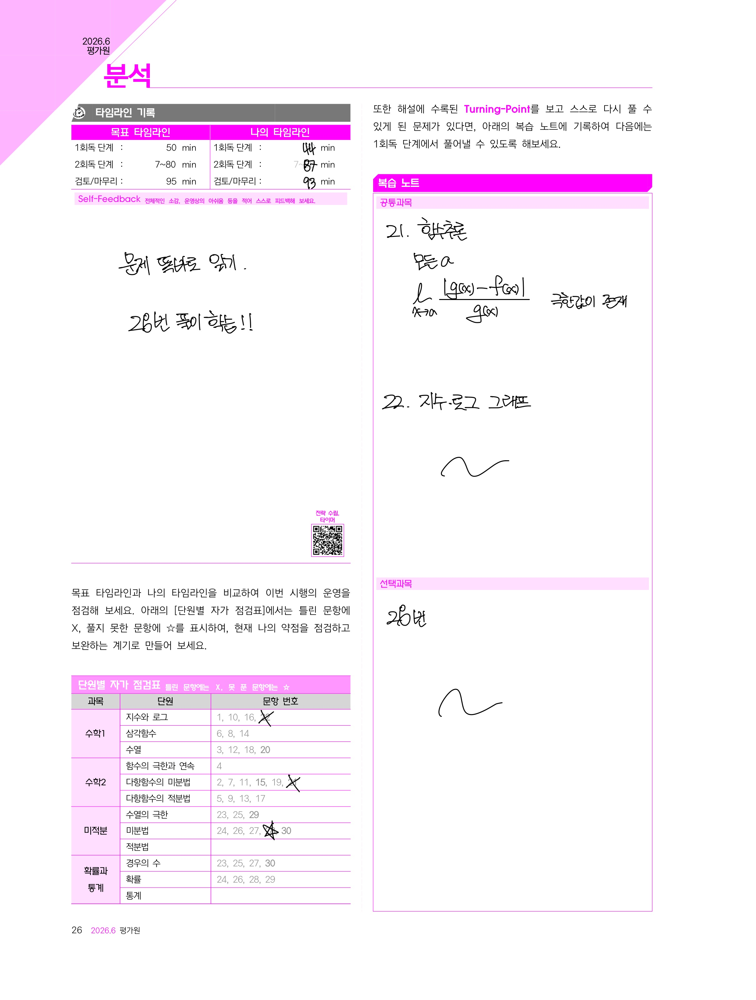

1. 시험 운용 및 약점 파악
나의 시험 운용 흐름을 객관적으로 돌아보고, 단원별로 뚫려있는 개념 구멍을 찾아내는 첫걸음입니다.
타임라인 기록
- 목표 타임라인과 나의 실제 타임라인을 대조해 보세요.
- 어느 구간에서 시간을 많이 빼앗겼는지 파악하는 것이 중요합니다.
단원별 자가 점검표
- 수학Ⅰ, 수학Ⅱ, 선택과목(미적분/확률과 통계) 표에 맞힌 문항(O), 틀린 문항(X), 헷갈린 문항(△)을 표시하세요.
- 표시된 결과를 바탕으로 나의 취약 단원을 시각화할 수 있습니다.
💡 활용 팁: 1페이지의 '복습 노트' 영역에는 해설지에 수록된 Turning-Point를 참고하여, 스스로 다시 풀 수 있게 된 과정을 반드시 직접 적어보세요.

2. 해당 시험의 총평 및 보정 등급컷
출제자의 의도를 읽고, 이번 시험의 전체적인 난이도 속에서 나의 현재 위치를 정확히 파악합니다.
총평 읽기
- 공통과목과 선택과목의 체감 난이도를 확인하세요.
한눈에 보는 등급컷
- 그래프를 통해 미적분과 확률과 통계 응시자 간의 유불리를 확인합니다.
- 나의 원점수를 바탕으로 예상 등급과 백분위를 객관적으로 가늠해 보세요.
3. 문항별 출제 의도 및 상세 분석
단순한 문제 풀이를 넘어, 평가원이 어떤 개념을 묻고자 했는지 개별 문항의 뼈대를 해부합니다.
문항 구성표
- 출제된 단원과 문항 번호를 매칭하여 시험의 전반적인 출제 비중을 확인하세요.
개별 문항 분석
- 핵심 문항들의 출제 포인트(예: 미분가능성, 귀납적 추론 등)와 평가원의 의도를 읽어보세요.
- 리포트가 제시하는 접근법과 나의 실제 시험장 풀이 방식을 비교하며 교정해야 할 점을 찾습니다.
4. 수준별 맞춤 학습 전략 수립
현재 나의 등급대에서 다음 시험을 위해 당장 실천해야 할 구체적인 행동 강령을 제시합니다.
목표 등급별 복기 포인트
- 1등급, 2등급, 3등급 등 나의 현재 수준과 목표 수준에 맞는 박스를 찾아 정독하세요.
선택과목별 전략 적용
- 가이드에 맞춰 다음 복습 계획과 기출 학습 방향을 설정하세요.